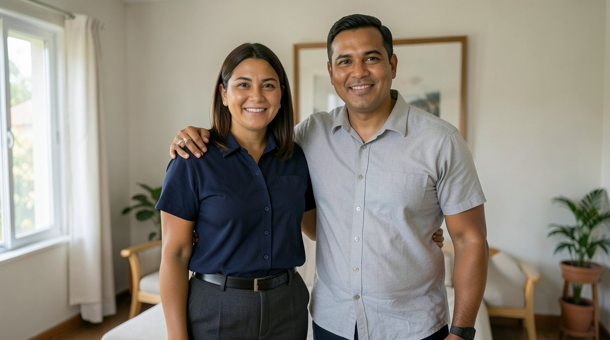
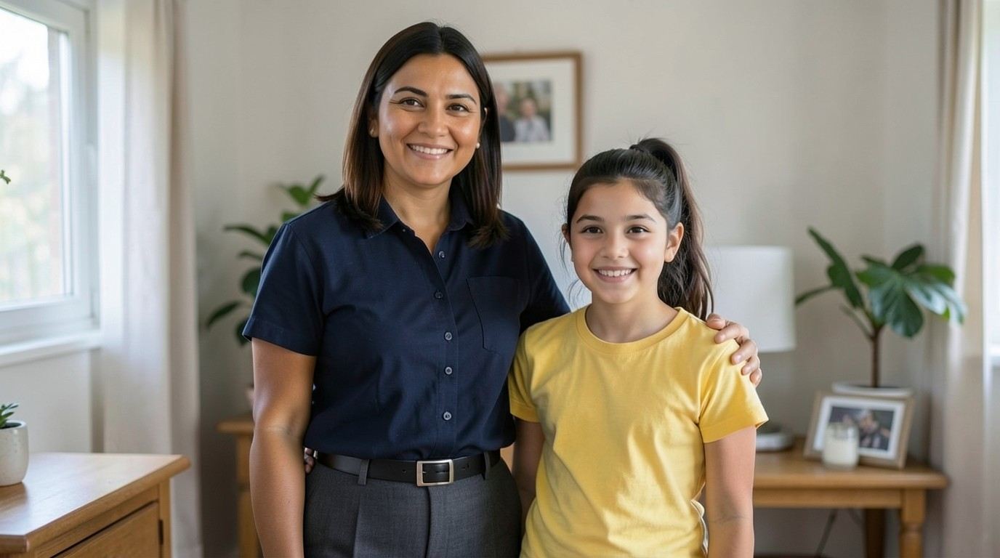

Día 1. Escucha
- Mira la imagen y escucha el diálogo una vez, sin leer.
- Escucha cada palabra y elige el significado.
- Escucha otra vez y lee. Tapa el español; destápalo solo si lo necesitas.
Diálogo
Ana. Yes. This is my family. This is my husband, Carlos.
Sí. Esta es mi familia. Este es mi esposo, Carlos.
Ana. She is my daughter. Her name is Sofia. She is 8 years old.
Es mi hija. Se llama Sofía. Tiene 8 años.
Ana. He is my brother. His name is Diego. He has two sons.
Es mi hermano. Se llama Diego. Tiene dos hijos.
Ana. Yes. This is my mother, and this is my father. My parents are from Panama City.
Sí. Esta es mi madre y este es mi padre. Mis padres son de la Ciudad de Panamá.
Luis. This is my family. This is my wife, Rosa, and this is my son.
Esta es mi familia. Esta es mi esposa, Rosa, y este es mi hijo.
Luis. She is my sister. Her name is Marta. She is my friend.
Es mi hermana. Se llama Marta. Es mi amiga.
Imágenes
Escucha las tres palabras. Para cada una, escribe la letra de la imagen.


Día 2. Estudia
En español puedes quitar la persona: Es mi hermano. Tiene dos hijos.
En inglés la frase necesita he o she: He is my brother. She is my daughter.
Con he y she, have cambia a has: I have, he has, she has.
No digas Is my brother. No digas He have.
- Corrige: Is my brother.
- Corrige: He have two sons.
- Completa: ___ is my daughter. (ella)
- Completa: I ___ one brother. (have / has)
- Elige: (a) She has one son. (b) She have one son.
- Corrige: Is my mother. She have two daughters.
Las respuestas están en la clave.
Falso amigo: parents
Parents son el padre y la madre. En español, «parientes» son otras personas de la familia, como tíos y primos. Parents no es «parientes».
My parents are from Panama City.
/ʃ/ in she
La sh de she es un sonido suave y largo, como cuando pides silencio: shhh. No la cambies por la ch de «chica»; esa ch vuelve en la unidad 8.
Escucha. Repite. Grábate y escucha tu grabación una vez. Repite con el modelo.
Tarjetas
Di la palabra en español. Después toca la tarjeta para ver la respuesta y un ejemplo. Copia las tarjetas en papel.
mother
madre
This is my mother, and this is my father.
father
padre
This is my mother, and this is my father.
sister
hermana
She is my sister.
brother
hermano
He is my brother.
husband
esposo
This is my husband, Carlos.
wife
esposa
This is my wife, Rosa, and this is my son.
daughter
hija
She is my daughter.
son
hijo
He has two sons.
family
familia
This is my family.
friend
amigo
She is my friend.
Día 3. Habla y escribe
Tu familia
Primero lee y di la página de Ana. Después escribe cuatro frases sobre tu familia, o sobre las personas de tu casa, y dilas en voz alta.
This is my family.
This is my husband. His name is Carlos.
This is my daughter. Her name is Sofia. She is 8 years old.
I have one brother. He has two sons.
My parents are from Panama City.
This is my family. This is my husband, Carlos. This is my daughter, Sofia. I have one brother. He has two sons.
Conversación con Luis
Luis pregunta. Suena un tono. Tú respondes en el silencio. Después Ana responde.
- Primera vez: responde como Ana.
- Segunda vez: responde sobre ti. Grábate con el teléfono.
- Luis. Is this your family?
Ana. Yes. This is my family. - Luis. Who is he?
Ana. He is my husband. His name is Carlos. - Luis. Who is she?
Ana. She is my daughter. Her name is Sofia. - Luis. How old is she?
Ana. She is 8 years old. - Luis. And your brother?
Ana. I have one brother. He has two sons. - Luis. Are they your parents?
Ana. Yes. They are my mother and father.
Ahora tú
This is my family.
This is my ________. His / Her name is ________.
This is my ________. His / Her name is ________.
I have ________. He / She has ________.
Día 4. Otra vez, solo en inglés
Lee el diálogo una vez. Después habla con el audio al mismo tiempo.
Luis. Ana, is this your family?
Ana. Yes. This is my family. This is my husband, Carlos.
Luis. Who is she?
Ana. She is my daughter. Her name is Sofia. She is 8 years old.
Luis. And who is he?
Ana. He is my brother. His name is Diego. He has two sons.
Luis. Are they your parents?
Ana. Yes. This is my mother, and this is my father. My parents are from Panama City.
Luis. This is my family. This is my wife, Rosa, and this is my son.
Ana. And who is she?
Luis. She is my sister. Her name is Marta. She is my friend.
Lectura
Lee el texto dos veces. La segunda vez, lee con el audio.
This is Luis. He is 41 years old. He is from Panama City. This is his wife. Her name is Rosa. She is 39 years old. They have one son. His name is Tomas. He is 10 years old. Luis has one sister. Her name is Marta. She is his friend.
¿Puedo hacerlo?
I can name the people in my family.
Corrige: Is my sister. He have one son.
Si todavía no, repite el día 2 (la frase necesita he o she; con he y she, has). Después repite el día 3 con la pista de pausas.